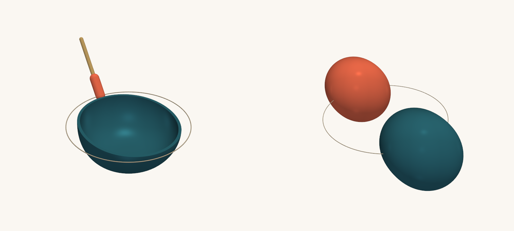

Gravitational waves · Neutron stars
Cosmic Singing Bowls
Neutron stars sing when their companion's orbit matches their natural tone. A small mistake about that tone can skew what we learn about matter at its densest.
Scientific Computing · Machine Learning · Statistical Inference · Cloud Infrastructure
I use machine learning, statistics, and scientific computing to solve complex problems. My work spans scientific research, software engineering, cloud development, and applied AI.
Department of Physics, Montana State University, Bozeman, MT, USA
Scroll-driven, interactive retellings of my papers, written for curious readers.

Neutron stars sing when their companion's orbit matches their natural tone. A small mistake about that tone can skew what we learn about matter at its densest.
Code, data and site for the “Cosmic Singing Bowls” visual story.
Generate STL files of 3D-modeled, tidally deformed binary neutron stars above spiraling spacetime ripples.
Generate STL files of Tessendorf-style (or Gerstner) choppy water pieces for 3D milling: a disc or rectangle with a flat bottom and a choppy-water top.
I'm a theoretical astrophysicist with a PhD in physics from Montana State University (2026). My research focuses on machine-learning methods for gravitational-wave inference and on what neutron stars can reveal about matter at extreme densities.
Alongside my PhD, I spent five years building and deploying machine-learning systems on AWS for USGS science teams. My work has ranged from computer vision and Bayesian inference to cloud-native ML infrastructure, including SageMaker training workflows, containerized inference pipelines, and generative AI applications using Amazon Bedrock. I enjoy translating complex problems into statistical models and production software.